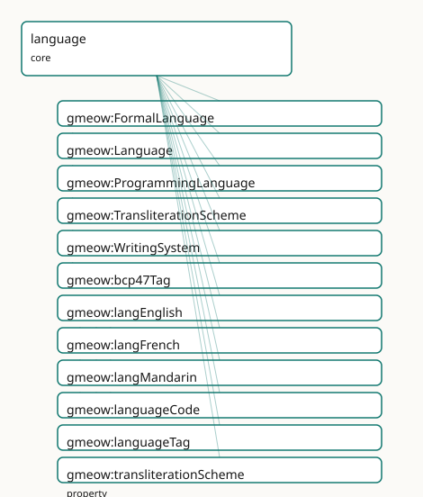

GMEOW Language Core Module
- IRI: https://blackcatinformatics.ca/gmeow/slices/language
- Tier: core
Group: core
What This Slice Covers
This slice owns 13 terms and contributes 17 mapping or projection rows. Use it when its terms match the native fact you want to preserve; use the linkage tables to see how those facts leave GMEOW for consumer vocabularies.
Dependencies
Consumers
- Every language-tagged literal (private-use-language-tag); names' romanizations; software's languages (P16 slim core).
Local Map

Terms
Classes
| Term | Label | Definition |
|---|---|---|
gmeow:FormalLanguage |
Formal Language | A grammar-defined language with a machine modality and no human native speakers — programming, markup, query, logic, schema, and configuration languages. A thi... |
gmeow:Language |
Language | A language as a first-class information object with a self-minted IRI: a system of signs/symbols and rules used for communication or computation. Registry-INDE... |
gmeow:ProgrammingLanguage |
Programming Language | A formal language for expressing executable computation (Python, Rust, SQL-as-implemented). The first-class target of gmeow:writtenInLanguage, by which a softw... |
gmeow:TransliterationScheme |
Transliteration Scheme | A named transliteration/romanization/transcription system (Hepburn, Pinyin, ISO 233, IPA, …). A value carried by gmeow:transliterationScheme; the major schemes... |
gmeow:WritingSystem |
Writing System | A first-class system for visually or tactilely representing language — a script: Latin, Han (kanji), Hiragana, Katakana, Arabic, Braille, or a bespoke conlang/... |
Properties
| Term | Label | Definition |
|---|---|---|
gmeow:bcp47Tag |
BCP-47 tag | An OPTIONAL external BCP-47 language tag used only when projecting GMEOW's internal private-use literals into vocabularies that require standard language-tag l... |
gmeow:languageCode |
language code | An OPTIONAL registry code for a language (a BCP-47 tag "ja", an ISO 639-3 code "jpn", a Glottocode). A see-also alignment value, NEVER identity — a code-less c... |
gmeow:languageTag |
language tag | The internal private-use BCP-47 language tag (e.g., 'und') used for @lang annotations on string literals representing this language. |
gmeow:transliterationScheme |
transliteration scheme | The named transliteration/romanization system that produced an appellation's gmeow:romanization (Hepburn vs Kunrei for Japanese; Pinyin vs Wade-Giles for Manda... |
gmeow:writtenInLanguage |
written in language | Relates an information object — an expression, a document, a source tree, an inscription reading — to a first-class gmeow:Language it is written in. The regist... |
Individuals
| Term | Label | Definition |
|---|---|---|
gmeow:langEnglish |
English | The English language — the seed gmeow:Language individual (gmeow:langEnglish) anchoring the internal private-use tag en carried by the framework's... |
gmeow:langFrench |
French | The French language — the seed gmeow:Language individual (gmeow:langFrench) anchoring the internal private-use tag fr. Registry codes are alignment... |
gmeow:langMandarin |
Mandarin Chinese | Mandarin Chinese — the seed gmeow:Language individual (gmeow:langMandarin) anchoring the internal private-use tag zh. Registry codes are alignmen... |
Linkages
- Rows: 17
- Projection profiles:
ontolex,schema-org - External vocabularies:
lime,ontolex,rdf,schema,wd
| Source | Kind | Profile | Predicate/Relation | Target | Evidence |
|---|---|---|---|---|---|
gmeow:FormalLanguage |
equivalence | - |
skos:closeMatch | wd:Q205892 | gmeow-languages.sssom.tsv; gmeow:eqLanguages003; confidence 0.7 |
gmeow:Language |
equivalence | - |
skos:closeMatch | schema:Language | gmeow-languages.sssom.tsv; gmeow:eqLanguages001; confidence 0.9 |
gmeow:Language |
equivalence | - |
skos:closeMatch | wd:Q34770 | gmeow-languages.sssom.tsv; gmeow:eqLanguages002; confidence 0.9 |
gmeow:ProgrammingLanguage |
equivalence | - |
skos:closeMatch | schema:ComputerLanguage | gmeow-languages.sssom.tsv; gmeow:eqLanguages004; confidence 0.8 |
gmeow:ProgrammingLanguage |
equivalence | - |
skos:closeMatch | wd:Q9143 | gmeow-languages.sssom.tsv; gmeow:eqLanguages005; confidence 0.85 |
gmeow:WritingSystem |
equivalence | - |
skos:closeMatch | wd:Q8192 | gmeow-languages.sssom.tsv; gmeow:eqLanguages006; confidence 0.85 |
gmeow:WritingSystem |
equivalence | - |
skos:closeMatch | wd:Q8192 | gmeow-notation.sssom.tsv; gmeow:eqNotation004; confidence 0.85 |
gmeow:languageCode |
equivalence | - |
skos:closeMatch | schema:iso6391Code | gmeow-languages.sssom.tsv; gmeow:eqLanguages011; confidence 0.6 |
gmeow:languageCode |
equivalence | - |
skos:relatedMatch | wd:P424 | gmeow-wikidata.sssom.tsv; gmeow:eqWikidata050; confidence 0.8 |
gmeow:FormalLanguage |
projection | schema-org |
projects to / <= | schema:alternateName | gmeow:mapSchemaBcp47; confidence 0.8; lossy: Glottocodes excluded; only 2-3 letter primary subtags; transform gmeow:fnComposeBcp47 |
gmeow:Language |
projection | schema-org |
projects to / = | schema:Language | gmeow:mapSchemaLanguage |
gmeow:Language |
projection | schema-org |
projects to / <= | schema:alternateName | gmeow:mapSchemaBcp47; confidence 0.8; lossy: Glottocodes excluded; only 2-3 letter primary subtags; transform gmeow:fnComposeBcp47 |
gmeow:ProgrammingLanguage |
projection | schema-org |
projects to / = | schema:ComputerLanguage | gmeow:mapSchemaProgrammingLanguage |
gmeow:bcp47Tag |
projection | ontolex |
projects to / <= | lime:language, ontolex:Form, ontolex:LexicalEntry, ontolex:lexicalForm, ontolex:writtenRep, rdf:type | gmeow:mapOntolexName; lossy: structured name parts, name usage contexts, register/audience |
gmeow:bcp47Tag |
projection | ontolex |
projects to / <= | lime:language, ontolex:LexicalEntry, rdf:type | gmeow:mapOntolexLexicalItem; lossy: hasLexicalForm links, form representations, etymology |
gmeow:bcp47Tag |
projection | schema-org |
projects to / <= | schema:inLanguage | gmeow:mapSchemaInLanguage; confidence 0.9; lossy: the first-class gmeow:Language collapses to its BCP-47 / ISO 639-1 tag string; script and variety detail drop |
gmeow:languageCode |
projection | schema-org |
projects to / <= | schema:alternateName | gmeow:mapSchemaBcp47; confidence 0.8; lossy: Glottocodes excluded; only 2-3 letter primary subtags; transform gmeow:fnComposeBcp47 |
Guide
Language — first-class languages, registry-independent by design
Slice:
https://blackcatinformatics.ca/gmeow/slices/language· tier: core The slim language foundation every slice depends on:Language,WritingSystem, theprivate-use-language-tagtag machinery, and the seed languages the framework itself speaks.
The standard pattern — inLanguage "ja" — makes a registry code the identity of a
language. GMEOW inverts this: a language is a first-class information object with a
self-minted IRI, and every registry (BCP-47, ISO 639, Glottolog, Wikidata) is an
optional alignment, never identity (Principle 5: bridge by reference). The payoff is
anti-colonial in both directions (Principle 9): a language is not less real for lacking a
committee-issued code — a conlang, an Indigenous language absent from a Western registry,
or an AI-generated language is exactly as first-class as English — and a richly-coded
language is not flattened to whichever single tag a schema happened to standardize.
Language sits in core (Principle 16) because every GMEOW literal depends on it: this is
the slim half of the dependency split, with the rich sociolinguistic machinery
(proficiency, varieties, diachronic states, conlang lineage) in the languages extension.
Internally, GMEOW's own literals carry private-use tags (@en, never
@en) so that the canonical graph never pretends a registry tag is ground truth; standard
BCP-47 is reconstructed on projection (Principle 4: one canonical source, lossy
projections generated outward).
The classes
gmeow:Language
A system of signs and rules for communication or computation, under
gmeow:InformationObject. Identity is the IRI; codes are data (languageCode), registry
coreference is skos:exactMatch + gmeow:authorityLink. Its names are co-equal
gmeow:Appellations — endonym and exonym, never preferred-vs-alternate (the names
doctrine); the scripts it is written in bind co-equally via the extension's
WritingSystemUsage.
gmeow:WritingSystem
A script as a first-class object — Latin, Han, Hiragana, Arabic, Braille, or a bespoke
conlang/AI script — with scriptCode (ISO 15924 when one exists), a type, and a text
direction. Declared here (one-defining-slice rule) so names and documents can reference
scripts; bound to languages co-equally and simultaneously through the extension — a
language with three concurrent scripts (Japanese) is the normal case, not an edge case.
The tag machinery
gmeow:languageTag
The internal private-use BCP-47 tag ("en") that anchors @lang
annotations on the framework's literals to a first-class Language individual. Functional:
one internal tag per language — this is the join key between literal-space and IRI-space.
gmeow:bcp47Tag
The optional external tag ("en", xsd:language) used only when projecting into
vocabularies that demand standard tags. Non-functional: one language legitimately exposes
several BCP-47 tags across script/region/variant contexts — another reason a single flat
tag was never going to be identity.
gmeow:languageCode
Any registry code — BCP-47 "ja", ISO 639-3 "jpn", a Glottocode — as a see-also
alignment value, never identity. Non-functional: a language carries codes in several
registries at once, and a code-less language carries none and loses nothing.
The seed languages
gmeow:langEnglish · gmeow:langMandarin · gmeow:langFrench
The languages the framework itself speaks — the individuals anchoring en,
zh, and fr on GMEOW's own labels and definitions. They are
ordinary data, not schema: any slice or dataset mints further languages the same way (the
exhaustive reference catalog is).
ex:langKlingon a gmeow:Language ; # code-less, fully first-class
rdfs:label "tlhIngan Hol"@und ;
gmeow:languageTag "und" ;
gmeow:languageCode "tlh" . # alignment, not identity
Formal languages and transliteration
gmeow:FormalLanguage · gmeow:ProgrammingLanguage
Grammar-defined languages with machine modality and no native speakers — programming,
markup, query, logic, schema languages. A thin structural split (the sociolinguistic facets
simply don't apply), with ProgrammingLanguage as the first-class target of
writtenInLanguage for the software slice's source trees.
gmeow:transliterationScheme · gmeow:TransliterationScheme
How a romanization was derived — Hepburn vs Kunrei, Pinyin vs Wade-Giles — attached to a
gmeow:Appellation beside its gmeow:romanization. This is the bridge into the names
slice's doctrine that a romanization relates a name only to a transliteration of itself;
recording the scheme makes the derivation reproducible. The major schemes are catalogued as
FnO functions in the projection layer (projections/transforms.fno.ttl).
gmeow:writtenInLanguage
The generic written-in relation (FRBR's language-of-expression, domain-wide): any
InformationObject — a document, an expression, a source tree, an inscription reading — is
written in a first-class Language IRI, never a code literal. Non-functional: content
mixes languages, and a codebase uses several. The registry-independent replacement for the
inLanguage "ja" anti-pattern GMEOW's own doctrine names.
Solver and projection notes
Tag work is computation, not assertion (Principle 12): reconstructing a standard BCP-47 tag
from bcp47Tag (+ script/region context), executing a transliteration scheme, and matching
a name's language to an audience locale all happen in the solver/projection layer — the
canonical graph stores the first-class objects and their alignments, nothing derived.
Projections to schema.org (schema:inLanguage), Dublin Core (dcterms:language), and
Wikidata are downcasts; the private-use-tag discipline is canonical and internal.
Dependencies
Depends on kernel and names (Appellation, romanization). Depended on by effectively
everything: every private-use-language-tag literal in every slice resolves here, names' romanizations
cite its schemes, and software's writtenInLanguage targets its classes (P16 slim core).